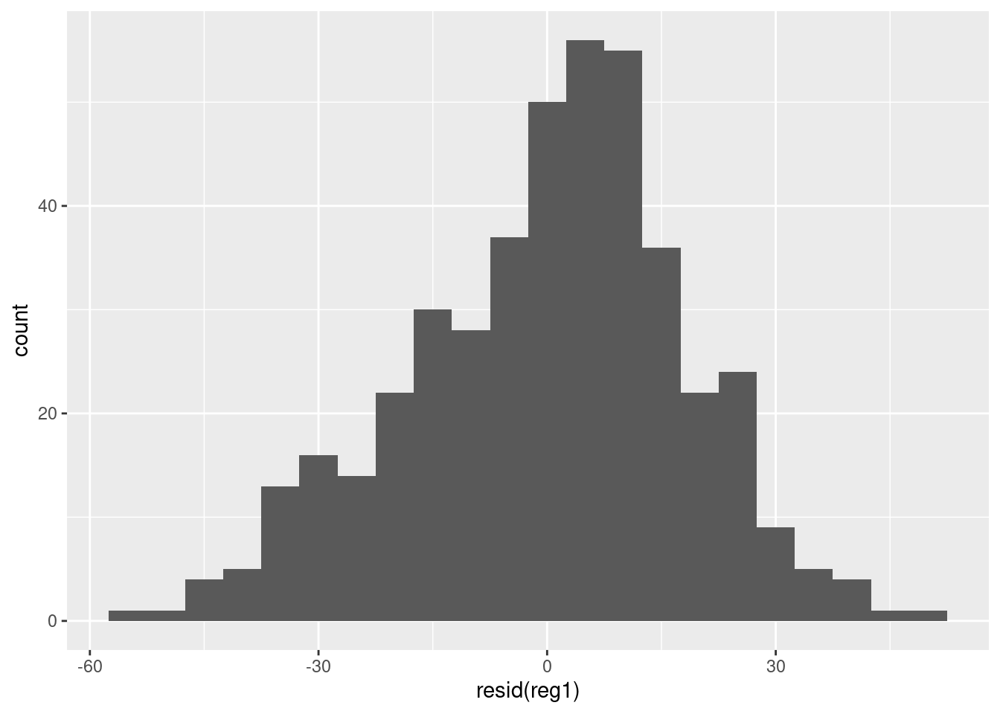
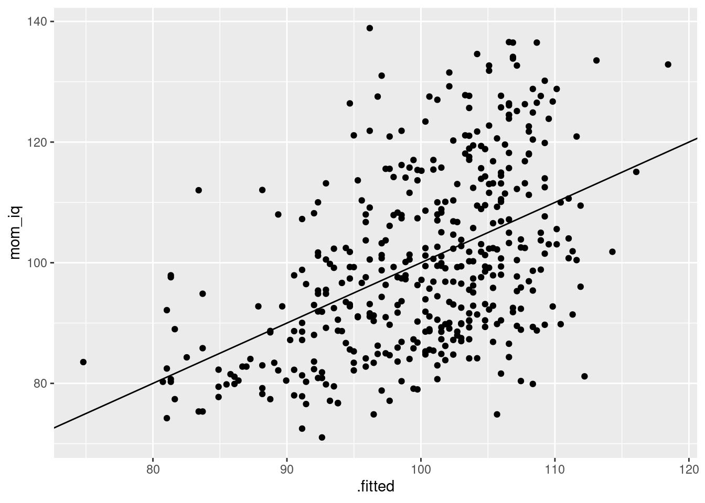

Lesson 4 Predictive Regression Part I
4.1 Introduction
This is the first of two lessons that will teach you how to implement and interpret predictive linear regression in R. For the moment we won't worry about causality and we won't talk about heteroskedasticity or autocorrelation. In this first lesson, we'll introduce the basics using a simple dataset that you can download from my website and display as follows:
library(readr)
kids <- read_csv("http://ditraglia.com/econ103/child_test_data.csv")
kids## # A tibble: 434 × 4
## kid.score mom.hs mom.iq mom.age
## <dbl> <dbl> <dbl> <dbl>
## 1 65 1 121. 27
## 2 98 1 89.4 25
## 3 85 1 115. 27
## 4 83 1 99.4 25
## 5 115 1 92.7 27
## 6 98 0 108. 18
## 7 69 1 139. 20
## 8 106 1 125. 23
## 9 102 1 81.6 24
## 10 95 1 95.1 19
## # … with 424 more rowsEach row of the tibble kids contains information on a three-year old child. The first column gives the child's test score at age three, while the remaining columns provide information about each child's mother:
kid.scorechild test score at age 3mom.ageage of mother at birth of childmom.hsmother completed high school? (1 = yes)mom.iqmother's IQ score
The columns kid.score gives the child's test score at age three. The remaining columns describe the child's mother: mom.age is mother's age at the birth of the child, mom.hs is a dummy variable that equals one the mother completed high school, and mom.iq is the mother's IQ score. Our main goal will be to predict a child's test score based on mother characteristics. But stay alert: in some of the exercises I may be a bit devious and ask you to predict something else!
Exercise
- Rename the columns to replace each instance of a "." with an underscore: "_".
- Summary stats for the columns.
library(dplyr)
kids <- kids %>%
rename(kid_score = kid.score,
mom_hs = mom.hs,
mom_iq = mom.iq,
mom_age = mom.age)
summary(kids)## kid_score mom_hs mom_iq mom_age
## Min. : 20.0 Min. :0.0000 Min. : 71.04 Min. :17.00
## 1st Qu.: 74.0 1st Qu.:1.0000 1st Qu.: 88.66 1st Qu.:21.00
## Median : 90.0 Median :1.0000 Median : 97.92 Median :23.00
## Mean : 86.8 Mean :0.7857 Mean :100.00 Mean :22.79
## 3rd Qu.:102.0 3rd Qu.:1.0000 3rd Qu.:110.27 3rd Qu.:25.00
## Max. :144.0 Max. :1.0000 Max. :138.89 Max. :29.004.2 The Least Squares Problem
Suppose we observe a dataset with \(n\) observations \((Y_i, X_i)\) where \(Y_i\) is an outcome variable for person \(i\)--the thing we want to predict--and \(X_i\) is a vector of \(p\) predictor variables--the things we'll use to make our prediction. In the kids dataset, our outcome is kid_score and our predictors are mom_hs, mom_age, and mom_iq. Our goal is to build a model of the form \(X'\beta = \sum_{j=1}^p \beta_j X_{j}\) that we can use to predict \(Y\) for a person who is not in our dataset. The constants \(\beta_j\) are called coefficients and a model of this form is called a linear model because the \(\beta_j\) enter linearly: they're not raised to any powers etc. Ordinary least squares (OLS) uses the observed data to find the coefficients \(\widehat{\beta}\) that solve the least squares problem
\[
\underset{\beta}{\text{minimize}} \sum_{i=1}^n (Y_i - X_i'\beta)^2.
\]
In case you were wondering "but wait, where's the intercept?" I should point out that some people prefer to write \((Y_i - \beta_0 - X_i' \beta)\) rather than \((Y_i - X_i'\beta)\). To allow an intercept using my notation, simply treat the first element of my \(X_i\) vector as a \(1\) and the first element of my \(\beta\) vector as the intercept.
4.3 Linear Regression with lm()
The R function lm(), short for linear model, solves the least squares problem. Its basic syntax is lm([formula], [dataframe]) where [formula] is an R formula--an object that describes the regression we want to run--and [dataframe] is the name of a data frame containing our \(X\) and \(Y\) observations, e.g. kids. R formulas can be a bit confusing when you first encounter them, so I'll explain the details in stages. For the moment, there are two symbols you need to learn: ~ and +
The tilde symbol ~ is used to separate the "left hand side" and "right hand side" of a formula: the outcome goes on the left of the ~ and the predictors go on the right. For example, to regress kid_score on mom_iq we use the command
lm(kid_score ~ mom_iq, kids)##
## Call:
## lm(formula = kid_score ~ mom_iq, data = kids)
##
## Coefficients:
## (Intercept) mom_iq
## 25.80 0.61This tells R: "please solve the least squares problem to predict kid_score using mom_iq based on the data contained in kids." Notice that R includes an intercept in the regression automatically. This is a good default, because it seldom makes sense to run a regression without an intercept. When you want to run a regression with multiple right-hand side predictors, use the plus sign + to separate them. For example, to regress kid_score on mom_iq and mom_ageuse the command
lm(kid_score ~ mom_iq + mom_age, kids)##
## Call:
## lm(formula = kid_score ~ mom_iq + mom_age, data = kids)
##
## Coefficients:
## (Intercept) mom_iq mom_age
## 17.5962 0.6036 0.3881Exercise
What's the correct interpretation of the regression coefficients from the regression lm(kid_score ~ mom_iq, kids)? How about in lm(kid_score ~ mom_iq, kids)?
Exercise
Run a linear regression to predict mom_hs using kid_score and mom_iq.
lm(mom_hs ~ kid_score + mom_iq, kids)##
## Call:
## lm(formula = mom_hs ~ kid_score + mom_iq, data = kids)
##
## Coefficients:
## (Intercept) kid_score mom_iq
## -0.060135 0.002775 0.0060504.4 Getting More from lm()
If we simply run lm as above, R will display only the estimated regression coefficients and the command that we used to run the regression: Call.
To get more information, we need to store the results of our regression using the assignment operator <- for example:
reg1 <- lm(kid_score ~ mom_iq, kids)If you run the preceding line of code in the R console, it won't produce any output. But if you check your R environment after running it, you'll see a new List object: reg1. To see what's inside this list, we can use the command str:
str(reg1)## List of 12
## $ coefficients : Named num [1:2] 25.8 0.61
## ..- attr(*, "names")= chr [1:2] "(Intercept)" "mom_iq"
## $ residuals : Named num [1:434] -34.68 17.69 -11.22 -3.46 32.63 ...
## ..- attr(*, "names")= chr [1:434] "1" "2" "3" "4" ...
## $ effects : Named num [1:434] -1808.22 190.39 -8.77 -1.96 33.73 ...
## ..- attr(*, "names")= chr [1:434] "(Intercept)" "mom_iq" "" "" ...
## $ rank : int 2
## $ fitted.values: Named num [1:434] 99.7 80.3 96.2 86.5 82.4 ...
## ..- attr(*, "names")= chr [1:434] "1" "2" "3" "4" ...
....Don't panic: you don't need to know what all of these list elements are.
The important thing to understand is that lm returns a list from which we can extract important information about the regression we have run.
To extract the regression coefficient estimates, we use the function coefficients() or coef() for short
coef(reg1)## (Intercept) mom_iq
## 25.7997778 0.6099746To extract the regression residuals, we use the function residuals() or resid() for short
resid(reg1)## 1 2 3 4 5 6
## -34.67839049 17.69174662 -11.21717291 -3.46152907 32.62769741 6.38284487
## 7 8 9 10 11 12
## -41.52104074 3.86488149 26.41438662 11.20806784 11.17050590 -25.66178773
## 13 14 15 16 17 18
## 3.93517580 -17.40659730 14.87699469 10.74760539 6.40273692 5.13172163
## 19 20 21 22 23 24
## -2.44440289 15.87116678 9.04396998 11.90180808 14.47664178 0.24807074
## 25 26 27 28 29 30
## 13.66974891 -4.06297022 -14.03359486 -7.52559318 2.18354609 2.47533381
....To extract the fitted values i.e. \(\hat{Y}_i \equiv X_i'\hat{\beta}\), the predicted values of, we use fitted.values
fitted.values(reg1)## 1 2 3 4 5 6 7 8
## 99.67839 80.30825 96.21717 86.46153 82.37230 91.61716 110.52104 102.13512
## 9 10 11 12 13 14 15 16
## 75.58561 83.79193 79.82949 83.66179 80.06482 95.40660 87.12301 99.25239
## 17 18 19 20 21 22 23 24
## 95.59726 93.86828 107.44440 85.12883 92.95603 103.09819 85.52336 86.75193
## 25 26 27 28 29 30 31 32
## 85.33025 100.06297 86.03359 85.52559 74.81645 95.52467 92.37138 87.90567
## 33 34 35 36 37 38 39 40
## 97.75549 92.06345 84.67978 82.44896 84.29520 91.07649 78.98774 80.30825
....Exercise
- Plot a histogram of the residuals from
reg1usingggplotwith a bin width of 5. Is there anything noteworthy about this plot? - Calculate the residuals "by hand" by subtracting the fitted values from
reg1from the columnkid_scoreinkids. Use the R functionall.equalto check that this gives the same result asresid(). - As long as you include an intercept in your regression, the residuals will sum to zero. Verify that this is true (up to machine precision!) of the residuals from
reg1 - By construction, the regression residuals are uncorrelated with any predictors included in the regression. Verify that this holds (up to machine precision!) for
reg1.
Solution
- There seems to be a bit of left skewness in the residuals.
library(ggplot2)
ggplot() +
geom_histogram(aes(x = resid(reg1)), binwidth = 5)
- They give exactly the same result:
all.equal(resid(reg1), kids$kid_score - fitted.values(reg1))## [1] TRUE- Close enough!
sum(resid(reg1))## [1] 1.056155e-12cor(resid(reg1), kids$mom_iq)## [1] 3.121525e-164.5 Summarizing The Ouput of lm()
To view the "usual" summary of regression output, we use the summary() function:
summary(reg1)##
## Call:
## lm(formula = kid_score ~ mom_iq, data = kids)
##
## Residuals:
## Min 1Q Median 3Q Max
## -56.753 -12.074 2.217 11.710 47.691
##
## Coefficients:
## Estimate Std. Error t value Pr(>|t|)
## (Intercept) 25.79978 5.91741 4.36 1.63e-05 ***
## mom_iq 0.60997 0.05852 10.42 < 2e-16 ***
## ---
## Signif. codes: 0 '***' 0.001 '**' 0.01 '*' 0.05 '.' 0.1 ' ' 1
##
## Residual standard error: 18.27 on 432 degrees of freedom
## Multiple R-squared: 0.201, Adjusted R-squared: 0.1991
## F-statistic: 108.6 on 1 and 432 DF, p-value: < 2.2e-16Among other things, summary shows us the coefficient estimates and associated standard errors for each regressor. It also displays the t-value (Estimate / SE) and associated p-value for a test of the null hypothesis \(H_0\colon \beta = 0\) versus \(H_1\colon \beta \neq 0\). Farther down in the output, summary provides the residual standard error, the R-squared, and the F-statistic and associated p-value for a test of the null hypothesis that all regression coefficients except for the intercept are zero.17
Health warning: by default, lm() computes standard errors and p-values under the classical regression assumptions. In particular, unless you explicitly tell R to do otherwise, it will assume that the regression errors \(\varepsilon_i \equiv Y_i - X_i' \beta\) are homoskedastic, and iid. If you're not quite sure what this means, or if you're worried that I'm sweeping important details under the rug, fear not: we'll revisit this in a later lesson. For the moment, let me offer you the following mantra, paraphrasing the wisdom of my favorite professor from grad school:
You can always run a [predictive] linear regression; it's inference that requires assumptions.
Exercise
Use the kids tibble to run a regression that uses kid_score and mom_hs to predict mom_iq. Store your results in an object called reg_reverse and then display a summary of the regression results.
reg_reverse <- lm(mom_iq ~ mom_hs + kid_score, kids)
summary(reg_reverse)##
## Call:
## lm(formula = mom_iq ~ mom_hs + kid_score, data = kids)
##
## Residuals:
## Min 1Q Median 3Q Max
## -31.046 -10.412 -1.762 8.839 42.714
##
## Coefficients:
## Estimate Std. Error t value Pr(>|t|)
## (Intercept) 68.86638 2.82454 24.381 < 2e-16 ***
## mom_hs 6.82821 1.58450 4.309 2.03e-05 ***
## kid_score 0.29688 0.03189 9.309 < 2e-16 ***
## ---
## Signif. codes: 0 '***' 0.001 '**' 0.01 '*' 0.05 '.' 0.1 ' ' 1
##
## Residual standard error: 13.16 on 431 degrees of freedom
## Multiple R-squared: 0.234, Adjusted R-squared: 0.2304
## F-statistic: 65.82 on 2 and 431 DF, p-value: < 2.2e-164.6 Using broom() to get what you need from lm()
We saw above that lm() returns a list. It turns out that summary(), when applied to an lm() object, also returns a list:
str(summary(reg1))## List of 11
## $ call : language lm(formula = kid_score ~ mom_iq, data = kids)
## $ terms :Classes 'terms', 'formula' language kid_score ~ mom_iq
## .. ..- attr(*, "variables")= language list(kid_score, mom_iq)
## .. ..- attr(*, "factors")= int [1:2, 1] 0 1
## .. .. ..- attr(*, "dimnames")=List of 2
## .. .. .. ..$ : chr [1:2] "kid_score" "mom_iq"
## .. .. .. ..$ : chr "mom_iq"
## .. ..- attr(*, "term.labels")= chr "mom_iq"
## .. ..- attr(*, "order")= int 1
....In principle, this gives us a way of extracting particular pieces of information from a table of regression output generated by summary(). For example, if you carefully examine the output of str(summary(reg1)) you'll find a named list element called r.squared. By accessing this element, you can pluck out the R-squared from summary(reg1) as follows:
summary(reg1)$r.squared## [1] 0.2009512Similarly, you could extract F-statistics and associated degrees of freedom by accessing You could extract the information
That wasn't so bad! But now suppose you wanted to extract the estimates, standard errors, and p-values from reg1. While it's possible to do this by poring over the output of str(summary(reg1)), there's a much easier way.
The broom package provides some extremely useful functions for extracting regression output. Best of all, the same tools apply to models that we'll meet in later lessons. Use tidy() to create a tibble containing regression estimates, standard errors, t-statistics, and p-values e.g.
library(broom)
tidy(reg1)## # A tibble: 2 × 5
## term estimate std.error statistic p.value
## <chr> <dbl> <dbl> <dbl> <dbl>
## 1 (Intercept) 25.8 5.92 4.36 1.63e- 5
## 2 mom_iq 0.610 0.0585 10.4 7.66e-23Use glance() to create a tibble that summarizes various measures of model fit:
glance(reg1)## # A tibble: 1 × 12
## r.squared adj.r.squared sigma statistic p.value df logLik AIC BIC
## <dbl> <dbl> <dbl> <dbl> <dbl> <dbl> <dbl> <dbl> <dbl>
## 1 0.201 0.199 18.3 109. 7.66e-23 1 -1876. 3757. 3769.
## # … with 3 more variables: deviance <dbl>, df.residual <int>, nobs <int>Finally, use augment() to create a tibble that merges the tibble you used to run your regression with the corresponding regression fitted values, residuals, etc.
augment(reg1, kids)## # A tibble: 434 × 10
## kid_score mom_hs mom_iq mom_age .fitted .resid .hat .sigma .cooksd
## <dbl> <dbl> <dbl> <dbl> <dbl> <dbl> <dbl> <dbl> <dbl>
## 1 65 1 121. 27 99.7 -34.7 0.00688 18.2 0.0126
## 2 98 1 89.4 25 80.3 17.7 0.00347 18.3 0.00164
## 3 85 1 115. 27 96.2 -11.2 0.00475 18.3 0.000905
## 4 83 1 99.4 25 86.5 -3.46 0.00231 18.3 0.0000416
## 5 115 1 92.7 27 82.4 32.6 0.00284 18.2 0.00456
## 6 98 0 108. 18 91.6 6.38 0.00295 18.3 0.000181
## 7 69 1 139. 20 111. -41.5 0.0178 18.2 0.0478
## 8 106 1 125. 23 102. 3.86 0.00879 18.3 0.000200
## 9 102 1 81.6 24 75.6 26.4 0.00577 18.2 0.00611
## 10 95 1 95.1 19 83.8 11.2 0.00255 18.3 0.000483
## # … with 424 more rows, and 1 more variable: .std.resid <dbl>Notice that augment() uses a dot "." to begin the name of any column that it merges. This avoids potential clashes with columns you already have in your dataset. After all, you'd never start a column name with a dot would you?
Exercise
To complete these exercises, you may need to consult the help files for tidy.lm(), glance.lm(), and augment.lm() from the broom package. These will tell you how the functions tidy(), glance(), and augment() behave when you apply them to an lm() object.
- Use
dplyrandtidy()to display the regression estimate, standard error, t-statistic, and p-value for the predictorkid_scoreinreg_reversefrom above.
reg_reverse %>%
tidy() %>%
filter(term == 'kid_score')## # A tibble: 1 × 5
## term estimate std.error statistic p.value
## <chr> <dbl> <dbl> <dbl> <dbl>
## 1 kid_score 0.297 0.0319 9.31 6.61e-19- Use
ggplot()andaugment()to make a scatterplot with the fitted values fromreg_reverseon the horizontal axis andmom_iqon the vertical axis. Usegeom_abline()to add a 45-degree line to your plot
augment(reg_reverse, kids) %>%
ggplot(aes(x = .fitted, y = mom_iq)) +
geom_point() +
geom_abline(intercept = 0, slope = 1)
- Continuing from the preceding exercise, run a regression of
mom_iqon the fitted values fromreg_reverseand display the estimated regression coefficients. Compare the R-squared of this regression to that ofreg_reverse. Explain your results.
kids_augmented <- augment(reg_reverse, kids)
reg_y_vs_fitted <- lm(mom_iq ~ .fitted, kids_augmented)
tidy(reg_y_vs_fitted)## # A tibble: 2 × 5
## term estimate std.error statistic p.value
## <chr> <dbl> <dbl> <dbl> <dbl>
## 1 (Intercept) 1.96e-13 8.73 2.25e-14 1.00e+ 0
## 2 .fitted 1.00e+ 0 0.0871 1.15e+ 1 7.85e-27glance(reg_reverse)## # A tibble: 1 × 12
## r.squared adj.r.squared sigma statistic p.value df logLik AIC BIC
## <dbl> <dbl> <dbl> <dbl> <dbl> <dbl> <dbl> <dbl> <dbl>
## 1 0.234 0.230 13.2 65.8 1.14e-25 2 -1733. 3474. 3490.
## # … with 3 more variables: deviance <dbl>, df.residual <int>, nobs <int>glance(reg_y_vs_fitted)## # A tibble: 1 × 12
## r.squared adj.r.squared sigma statistic p.value df logLik AIC BIC
## <dbl> <dbl> <dbl> <dbl> <dbl> <dbl> <dbl> <dbl> <dbl>
## 1 0.234 0.232 13.1 132. 7.85e-27 1 -1733. 3472. 3484.
## # … with 3 more variables: deviance <dbl>, df.residual <int>, nobs <int>4.7 Dummy Variables with lm()
The column mom_hs in kids is a dummy variable, also known as a binary variable. It equals 1 if a child's mother graduated from college and 0 otherwise. For this reason, the coefficient on mom_hs in the following regression tells us the difference of mean test scores between kids whose mothers graduated from college and those whose mothers did not, while the intercept tells us the mean of kid_score for children whose mothers didn't graduate from high school:
lm(kid_score ~ mom_hs, kids)##
## Call:
## lm(formula = kid_score ~ mom_hs, data = kids)
##
## Coefficients:
## (Intercept) mom_hs
## 77.55 11.77Although it's represented using the numerical values 0 and 1, mom_hs doesn't actually encode quantitative information. The numerical values are just shorthand for two different categories: mom_hs is a categorical variable. To keep from getting confused, it's good practice to make categorical variables obvious by storing them as character or factor data. Here I create a new column, mom_education, that stores the same information as mom_hs as a factor:
kids <- kids %>%
mutate(mom_education = if_else(mom_hs == 1, 'High School', 'No High School')) %>%
mutate(mom_education = factor(mom_education, levels = unique(mom_education)))The column mom_education is a factor, R's built-in representation of a categorical variable. So what happens if we include mom_education in our regression in place of mom_hs?
lm(kid_score ~ mom_education, kids)##
## Call:
## lm(formula = kid_score ~ mom_education, data = kids)
##
## Coefficients:
## (Intercept) mom_educationNo High School
## 89.32 -11.77Wait a minute; now the estimate is negative! We can't run a regression that includes an intercept and a coefficient for each level of a dummy variable--this is the dummy variable trap!--so R has excluded one of them. Rather capriciously, lm() has chosen to treat High School as the omitted category.
We can override this behavior by using fct_relevel() from the forcats package. The following code tells R that we want 'No High School' to be the first ordered factor level, the level that lm() treats as the omitted category by default:
library(forcats)
kids <- kids %>%
mutate(mom_education = fct_relevel(mom_education, 'No High School'))
lm(kid_score ~ mom_education, kids)##
## Call:
## lm(formula = kid_score ~ mom_education, data = kids)
##
## Coefficients:
## (Intercept) mom_educationHigh School
## 77.55 11.77Explain about categorical variables that take on more than two values!
Exercise
Create a categorical variable with three levels perhaps using mom_age? Then see what happens
This is worth putting in bold: you never have to explicitly construct dummy variables in R. The lm() function will construct them for you.
4.8 Fun with R Formulas
It's time to learn some more about R formulas. But before we do, you may ask "why bother?" It's true that you run just about any regression you need using nothing more complicated than + and ~ as introduced above. I know, because I did this for the better part of a decade! But a key goal of this book is showing you how to work smarter rather than harder, both to make your own life easier and help others replicate your work. If you ever plan to fit more than a handful of models with more than a handful of variables, it's worth your time to learn about formulas. You've already met the special symbols ~ and + explained in the following table. In the next few sub-sections, I'll walk you through the others: ., -, 1, :, *, ^, and I().
| Symbol | Purpose | Example | In Words |
|---|---|---|---|
~ |
separate LHS and RHS of formula | y ~ x |
regress y on x |
+ |
add variable to a formula | y ~ x + z |
regress y on x and z |
. |
denotes "everything else" | y ~ . |
regress y on all other variables in a data frame |
- |
remove variable from a formula | y ~ . - x |
regress y on all other variables except z |
1 |
denotes intercept | y ~ x - 1 |
regress y on x without an intercept |
: |
construct interaction term | y ~ x + z + x:z |
regress y on x, z, and the product x times z |
* |
shorthand for levels plus interaction | y ~ x * z |
regress y on x, z, and the product x times z |
^ |
higher order interactions | y ~ (x + z + w)^3 |
regress y on x, z, w, all two-way interactions, and the three-way interactions |
I() |
"as-is" - override special meanings of other symbols from this table | y ~ x + I(x^2) |
regress y on x and x squared |
4.8.1 "Everything Else" -- The Dot .
Sometimes all you want to do is run a regression of one variable on everything else. If you have lots of predictors, typing out all of their names, each separated by a + sign, is painful and error-prone. Fortunately there's a shortcut: the dot .
lm(kid_score ~ ., kids)##
## Call:
## lm(formula = kid_score ~ ., data = kids)
##
## Coefficients:
## (Intercept) mom_hs mom_iq
## 20.9847 5.6472 0.5625
## mom_age mom_educationHigh School
## 0.2248 NAThis command tells R to regress kid_score on everything else in kids. We'll encounter the dot in many guises later in this lesson and elsewhere. Wherever you see it, replace it mentally with the word "everything" and you'll never be confused. The rest will be clear from context.
4.8.2 Removing Predictors with -
Suppose you wanted to regress kid_score on mom_hs and mom_iq but not mom_age. One way to do this is by writing out the formula explicitly:
lm(kid_score ~ mom_hs + mom_iq, kids)##
## Call:
## lm(formula = kid_score ~ mom_hs + mom_iq, data = kids)
##
## Coefficients:
## (Intercept) mom_hs mom_iq
## 25.7315 5.9501 0.5639In this example, it's not too difficult to specify the formula we want by typing it out in full. But what if we had dozens of predictors and only wanted to exclude one or two? This is where the minus sign - comes in handy. Think of + as saying "add me to the regression" and - as saying "remove me from the regression." By combining - with . we can tell R to "add everything, then remove mom_age" as follows:
lm(kid_score ~ . - mom_age, kids)##
## Call:
## lm(formula = kid_score ~ . - mom_age, data = kids)
##
## Coefficients:
## (Intercept) mom_hs mom_iq
## 25.7315 5.9501 0.5639
## mom_educationHigh School
## NAThis use of - is very similar to what you've seen in the select() function from dplyr. And as in dplyr, we can use it to remove more than one variable. In this example, it's silly but just to show you that it works as expected:
lm(kid_score ~ . - mom_age - mom_hs, kids)##
## Call:
## lm(formula = kid_score ~ . - mom_age - mom_hs, data = kids)
##
## Coefficients:
## (Intercept) mom_iq mom_educationHigh School
## 25.7315 0.5639 5.95014.8.3 The Intercept: 1
It almost always makes sense to include an intercept when you run a linear regression. Without one, we're forced to predict that \(Y\) will be zero when \(X\) is zero. Because this is usually a bad idea, lm() includes an intercept by default:
lm(kid_score ~ mom_iq, kids)##
## Call:
## lm(formula = kid_score ~ mom_iq, data = kids)
##
## Coefficients:
## (Intercept) mom_iq
## 25.80 0.61In some special cases, however, we may have a reason to run a regression without an intercept. R's formula syntax denotes the intercept by 1. Armed with this knowledge, we can remove it from our regression using - as introduced above:
lm(kid_score ~ mom_iq - 1, kids)##
## Call:
## lm(formula = kid_score ~ mom_iq - 1, data = kids)
##
## Coefficients:
## mom_iq
## 0.8623Another situation in which we may wish to remove the intercept is when running a regression with a categorical variable. As mentioned above, we can't include an intercept and a coefficient for each value of a categorical variable in our regression: this is the dummy variable trap. We either have to drop one level of the categorical variable (the baseline or omitted category) or drop the intercept. Above we saw how to choose which category to omit. But another option is to drop the intercept. In the first regression, the intercept equals the mean of kid_score for the omitted category mom_education == "No High School" while the intercept gives the difference of means:
lm(kid_score ~ mom_education, kids)##
## Call:
## lm(formula = kid_score ~ mom_education, data = kids)
##
## Coefficients:
## (Intercept) mom_educationHigh School
## 77.55 11.77In the second, we obtain the mean of kid_score for each group:
lm(kid_score ~ mom_education - 1, kids)##
## Call:
## lm(formula = kid_score ~ mom_education - 1, data = kids)
##
## Coefficients:
## mom_educationNo High School mom_educationHigh School
## 77.55 89.32kids %>%
group_by(mom_education) %>%
summarize(mean(kid_score))## # A tibble: 2 × 2
## mom_education `mean(kid_score)`
## <fct> <dbl>
## 1 No High School 77.5
## 2 High School 89.3Exercise #4
What do you get if you run the regression lm(kid_score ~ 1, kids)? Explain.
Solution
This is a regression with only an intercept, so it calculates the sample mean of kid_score
lm(kid_score ~ 1, kids)##
## Call:
## lm(formula = kid_score ~ 1, data = kids)
##
## Coefficients:
## (Intercept)
## 86.8kids %>%
summarize(mean(kid_score))## # A tibble: 1 × 1
## `mean(kid_score)`
## <dbl>
## 1 86.8If you're still not convinced, a quick calculation shows that \(\widehat{\alpha} = \bar{y}\) minimizes \(\sum_{i=1}^n (y_i - \alpha)^2\) over \(\alpha\), where \(\bar{y} \equiv \frac{1}{n}\sum_{i=1}^n y_i\).
4.8.4 Adding Interactions With :, *, and ^
Point out that * and ^ are really just helpful shorthand: you can do everything with : and +. There are many different ways to specify the same formula in R, but some are easier to type and some are easier to understand that others.
4.8.5 Transforming Outcomes and Predictors
What if you wanted to regress the logarithm of kid_score on mom_age and mom_age^2? One way to do this is by creating a new data frame:
new_kids <- kids %>%
mutate(log_kid_score = log(kid_score),
mom_age_sq = mom_age^2)
lm(log_kid_score ~ mom_age + mom_age_sq, new_kids)##
## Call:
## lm(formula = log_kid_score ~ mom_age + mom_age_sq, data = new_kids)
##
## Coefficients:
## (Intercept) mom_age mom_age_sq
## 4.4586761 -0.0109575 0.0004214It worked! But that required an awful lot of typing. What's more, I had to clutter up my R environment with another data frame: new_kids. A more elegant approach uses R's formula syntax to do all the heavy lifting. First I'll show you the syntax and then I'll explain it:
lm(log(kid_score) ~ mom_age + I(mom_age^2), kids)##
## Call:
## lm(formula = log(kid_score) ~ mom_age + I(mom_age^2), data = kids)
##
## Coefficients:
## (Intercept) mom_age I(mom_age^2)
## 4.4586761 -0.0109575 0.0004214The key point here is that we can use functions within an R function. When lm() encounters log(kid_score) ~ mom_age + I(mom_age^2) it looks at the data frame kids, and then parses the formula to construct all the variables that it needs to run the regession. There's no need for us to construct and store these in advance: R can do everything for us.
The only awkward part is the function I(). What on earth is that doing in our formula? Formulas have their own special syntax: a + inside a formula doesn't denote addition and a . doesn't indicate a decimal point. To override the special meanings of these symbols,
Every programming language has words and characters with special meanings. If you try to construct a variable called +TRUE^2, R won't let you: +, TRUE and ^ have special meanings in R. If, for whatever strange reason, you insist upon having a variable called +TRUE^2, you have to tell R that it shouldn't interpret these symbols in the usual name. You can do this by wrapping them in backticks, as follows:
`+TRUE^2` <- 6
`+TRUE^2`## [1] 6The role of I() inside an R formula is identical to that of back ticks in the creation of variable names
4.8.6 Formulas are objects
Shorten this. Don't get into too much detail, but point them to various functions for computing on and updating formulas. Say why this might be helpful: you want to run a linear probability model and Probit using the same LHS and RHS variables.
The first thing you need to know about formulas is that they're objects. This means we can store them, pass them into functions, and write code to modify them. Above we supplied kid_score ~ mom_iq as the first argument to lm(). Now let's try something different: we'll store this formula, give it a name, and then pass it to lm()
little_formula <- kid_score ~ mom_iq
str(little_formula)## Class 'formula' language kid_score ~ mom_iq
## ..- attr(*, ".Environment")=<environment: R_GlobalEnv>lm(little_formula, kids)##
## Call:
## lm(formula = little_formula, data = kids)
##
## Coefficients:
## (Intercept) mom_iq
## 25.80 0.61So what? We got exactly the same results above with less typing! Before it becomes clear why storing a formula could come in handy, we need to learn some additional syntax.
big_formula <- kid_score ~ mom_iq + mom_hs + mom_age4.9 Exercises
Look for interaction between mom_hs and mom_iq, interpret results, make some plots
If you're rusty on the F-test, this may help.↩︎